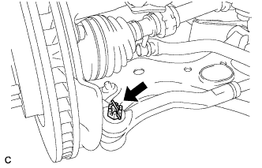
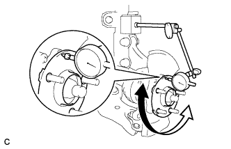
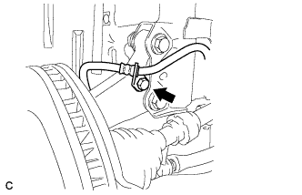
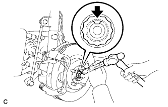

Speed Sensor Front LH Installation |
| 1. Install Front Axle Hub LH w/ Sensor Rotor |
Secure the front axle assembly in a vise between aluminum plates.
 |
Install the front axle hub with the dust cover and 4 bolts.
| 2. Install Front Axle Assembly LH |
 |
Install the front axle assembly LH to the shock absorber, insert the 2 bolts from the rear of the vehicle, and tighten the 2 nuts.
Push the front axle assembly LH toward the outside of the vehicle, engage the splines of the front drive shaft assembly LH, and insert it into the front axle assembly LH.
| 3. Install Front Suspension Arm Sub-assembly Lower NO.1 LH |
 |
Push down the front suspension lower arm No.1 LH, install the front lower ball joint LH, and tighten it with the 1 bolts and 2 nuts.
| 4. Install Tie Rod End LH |
 |
Connect the tie rod end LH to the steering knuckle and install it with the castle nut.
Install a new cotter pin.
| 5. Temporarily Tighten Front Axle Shaft Nut LH |
Temporarily tighten a new front axle hub nut LH.
| 6. Inspect Front Axle Hub & Bearing Assembly Axial Play |
 |
Using a dial indicator, check the bearing axial play near the inner circumference (flange) of the axle hub.
| 7. Inspect Front Axle Hub & Bearing Assembly Runout |
 |
Using a dial indicator, check the axle hub runout near the outer circumference of the axle hub.
| 8. Install Front Disc |
 |
Align the matchmarks on the disc and axle hub, and install the disc.
| 9. Install Front Disc Brake Caliper Assembly LH |
 |
Install the front disc brake caliper assembly LH to the steering knuckle with the 2 bolts.
| 10. Install Front Flexible Hose NO.1 |
 |
Install the flexible hose bracket to the steering knuckle with the bolt.
| 11. Install Front Axle Shaft Nut LH |
Using a socket wrench (30mm), fully tighten the front axle hub nut LH.
 |
Using a chisel and hammer, stake the front axle hub nut LH.
| 12. Install Speed Sensor Front LH |
Install the speed sensor to the steering knuckle with bolt C.

Install the clip to the steering knuckle.
Using bolt A, install sensor clamp No.1 together with the brake flexible hose to the shock absorber.
Install sensor clamp No.2 to the body with bolt B.
Connect the connector.
Install the speed sensor clip to the body.
| 13. Install Front Tire |
| 14. Connect Battery Negative Terminal |
| 15. Adjust Front Wheel Alignment |
)| 16. Setting Procedure When Disconnecting/Reconnecting Battery Terminal |
)| 17. Inspect Test Mode (Speed Sensor Circuit) |
)| 18. Check and Clear DTCs |
)